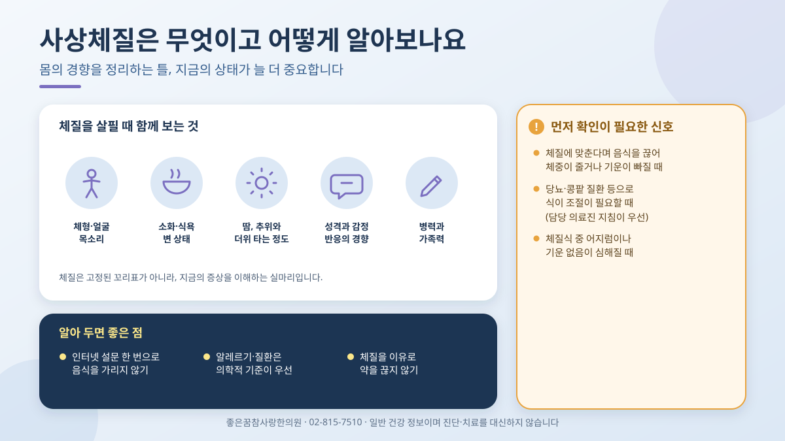
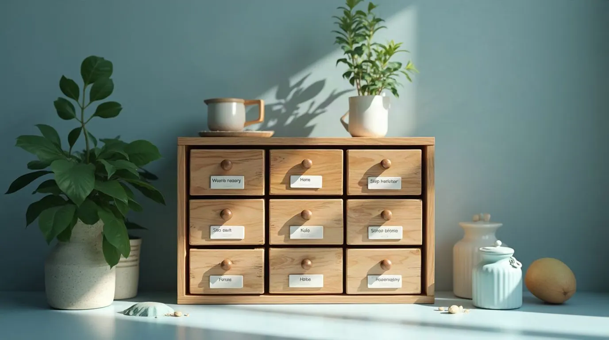

사상체질은 사람을 태양인, 태음인, 소양인, 소음인으로 나누어 몸의 경향을 살피는 한의학의 방법으로, 한 번의 설문으로 단정하지 않고 맥진과 체형, 소화, 땀, 잠, 성향, 병력을 함께 보며 참고 자료로 활용합니다.
여쭙는 것
- 평소 소화가 편한 음식과 더부룩해지는 음식이 있나요?
- 땀을 흘리고 나면 개운하신가요, 기운이 빠지시나요?
- 추위와 더위 가운데 무엇이 더 힘드신가요?
생활에서 해 볼 것
- 체질 결과로 음식을 가리기 전에 끼니 시간과 양부터 일정하게 맞추기
- 2주쯤 먹은 음식과 그 뒤 속의 느낌, 대변 상태를 짧게 적어 보기
- 땀을 흘린 뒤 개운한지, 지치는지 적어 두기
먼저 확인이 필요한 신호
- 체질에 맞춘다며 특정 음식을 끊어 체중이 줄거나 기운이 떨어진 경우
- 당뇨, 콩팥 질환 등으로 식이 조절이 필요한 경우(담당 의료진의 식이 지침이 우선)
- 체질식을 하다가 어지럼이나 기운 없음이 심해진 경우

사상체질은 사람의 타고난 경향을 태양인, 태음인, 소양인, 소음인 네 가지로 나누어 보는 한의학의 방법으로, 체형과 소화, 땀, 성향, 병력을 종합해 참고 자료로 살핍니다. 이제마 선생의 『동의수세보원』에서 비롯된 개념이며, 과학적 근거는 제한적이라 진단을 대신하지 않습니다. 체질보다 지금의 증상과 몸 상태를 먼저 봅니다.
왜 체질을 함께 보나요
- 같은 음식, 같은 생활 습관에도 사람마다 몸의 반응이 다른 경우가 있어, 그 경향을 이해하는 실마리로 씁니다.
- 소화가 약한지, 땀이 많은지, 추위와 더위 중 무엇을 더 타는지 같은 특징을 정리하는 틀이 됩니다.
- 다만 체질은 고정된 꼬리표가 아니며, 지금의 증상과 상태가 언제나 더 중요합니다.

네 가지 유형
태양인, 태음인, 소양인, 소음인으로 나뉘며 각각 장부의 강약과 성향이 다르다고 봅니다. 이 유형이 사람을 정해 놓은 것은 아니며 같은 유형 안에서도 개인차가 큽니다.
전통 이론에서 흔히 설명하는 경향은 다음과 같습니다.
- 태양인: 드문 유형으로 보며, 기운이 위로 오르기 쉬운 경향
- 소양인: 몸에 열이 많은 편이고 행동이 빠른 경향
- 태음인: 체격이 큰 편이고 땀을 흘리는 일이 잦은 경향
- 소음인: 소화가 예민하고 몸이 찬 편인 경향
이 설명은 이해를 돕는 틀일 뿐이며, 여기에 딱 들어맞는 사람은 많지 않습니다. 설명을 읽고 스스로 체질을 정하기보다 진료 때 지금의 상태와 함께 이야기해 보시길 권합니다.
어떻게 살피나요
한 가지 방법으로 단정하지 않고 아래를 종합합니다.
- 체형과 얼굴, 목소리
- 소화와 식욕, 변 상태
- 땀이 나는 정도, 추위와 더위를 타는 정도
- 성격과 감정 반응의 경향
- 병력과 가족력
- 잠의 모습과 대소변의 경향

먼저 이렇게 여쭙니다
- 평소 소화가 편한 음식과 더부룩해지는 음식이 있나요?
- 땀을 흘리고 나면 개운하신가요, 기운이 빠지시나요?
- 추위와 더위 가운데 무엇이 더 힘드신가요?
- 잠은 쉽게 드시고, 아침에 개운하신가요?
- 대변과 소변은 편하신가요?
- 긴장하거나 속상한 일이 있을 때 몸에서 먼저 반응하는 곳이 있나요?
예를 들면 이런 경우입니다
- 예를 들어 인터넷 설문 결과대로 음식을 가리다가 기운이 떨어졌다는 직장인이라면, 체질 이야기보다 먼저 식사량과 체중 변화, 잠을 여쭙고 무리하게 가리던 음식부터 다시 이야기합니다.
- 예를 들어 수험생 자녀의 체질을 궁금해하는 부모님이라면, 성장기에는 변화가 많아 단정하지 않고 아이의 식사, 잠, 소화, 활동량을 함께 살핍니다.
- 예를 들어 한의원마다 체질이 다르게 나왔다는 어르신이라면, 결과를 비교하기보다 지금 불편한 점과 복용 중인 약, 소화와 땀, 잠의 흐름을 먼저 봅니다.

알아 두면 좋은 점
- 인터넷 설문 한 번으로 체질을 정해 음식을 가리는 것은 권하지 않습니다.
- 알레르기나 질환이 있으면 체질보다 의학적 기준이 우선입니다.
- 성장 중인 아이는 변화가 많아 단정하지 않고 참고로만 봅니다.
- 체질을 이유로 복용 중인 약을 끊거나 바꾸지 않습니다.
일상에서 먼저 해 볼 수 있는 것
- 체질 결과로 음식을 가리기 전에 끼니 시간과 양부터 일정하게 맞추기
- 2주쯤 먹은 음식과 그 뒤 속의 느낌, 대변 상태를 짧게 적어 보기
- 땀을 흘린 뒤 개운한지, 지치는지 적어 두기
- 잠드는 시각과 깨는 시각을 적어 두기
- 특정 음식을 끊어 보고 싶다면 상담 뒤에 정하기

스스로 점검해 보세요
- 같은 음식을 먹어도 유독 나만 더부룩한 경우가 잦다
- 땀을 조금만 흘려도 기운이 빠진다
- 추위나 더위 가운데 한쪽을 유난히 탄다
- 긴장하면 소화나 잠이 먼저 흔들린다
- 인터넷 설문으로 체질을 정해 음식을 가리고 있다
- 체질식을 시작한 뒤 체중이 줄거나 기운이 떨어졌다
여러 항목에 해당하면 진료 때 그대로 말씀해 주세요. 체질보다 지금의 몸 상태를 먼저 살피는 데 도움이 됩니다.
얼마나 지켜보고, 언제 상담하면 좋을까요
- 체질식을 하다가 1~2주 사이 체중이 줄거나 기운이 떨어지면, 가리던 음식을 무리하게 이어 가지 말고 상담을 받아 보세요.
- 소화, 땀, 잠 같은 불편이 2~4주 넘게 이어지면 체질보다 지금 상태를 먼저 살피는 진료를 권합니다.
- 당뇨나 콩팥 질환이 있으면 체질식보다 담당 의료진의 식이 지침을 먼저 따르세요.

진료실에서는 이렇게 진행됩니다
좋은꿈참사랑한의원에서는 먼저 지금 불편한 점과 생활을 충분히 듣고, 진맥을 기본으로 하고 필요하다고 판단될 때 설진·복진과 함께 체질의 경향을 참고해 침이나 한약 상담 등 상태에 맞는 방법을 정합니다. 체질 이야기는 생활을 돌아보는 참고로 쓰며, 결과를 약속하는 근거로 쓰지 않습니다.
첫 방문에는 지금 가장 불편한 점과 함께 소화, 땀, 잠, 대소변, 추위와 더위를 타는 정도, 병력과 복용 중인 약을 먼저 여쭙고 맥을 짚습니다. 필요하다고 판단되면 혀와 배를 살피고, 체형과 목소리 같은 겉모습도 함께 봅니다. 그런 다음 체질 경향은 참고로만 말씀드리고, 지금 상태에 맞는 치료 방향과 생활에서 먼저 살필 점을 설명드립니다. 다시 오시면 지난번 이야기한 식사와 잠의 변화를 이어서 여쭙습니다.
이렇게 기록해 오시면 상담이 쉬워집니다
- 평소 소화가 편한 음식과 불편한 음식
- 땀이 많은 때와 추위·더위를 타는 정도
- 지금까지의 병력, 가족력, 복용 중인 약
- 받은 건강검진 결과(있다면)
- 다른 곳에서 체질 상담을 받았다면 그때 들은 내용

이런 증상은 먼저 확인이 필요합니다
- 체질에 맞춘다며 특정 음식을 끊어 체중이 줄거나 기운이 떨어진 경우
- 당뇨, 콩팥 질환 등으로 식이 조절이 필요한 경우(담당 의료진의 식이 지침이 우선)
- 체질식을 하다가 어지럼이나 기운 없음이 심해진 경우
복용 중인 약은 처방한 의사와 상의 없이 줄이거나 끊지 마세요.
함께 읽으면 좋은 글
- 사상체질은 무엇이고 한방 이론으로서 어떤 한계가 있나요?
- 체질 상담 결과가 한의원마다 다르게 나오면 어떻게 이해하면 되나요?
- 땀이 많거나 적다고 하면 진료실에서 무엇을 묻나요?
한눈에 보는 표
| 구분 | 핵심 |
|---|---|
| 여쭙는 것 | 평소 소화가 편한 음식과 더부룩해지는 음식이 있나요? 땀을 흘리고 나면 개운하신가요, 기운이 빠지시나요? |
| 생활에서 해 볼 것 | 체질 결과로 음식을 가리기 전에 끼니 시간과 양부터 일정하게 맞추기 2주쯤 먹은 음식과 그 뒤 속의 느낌, 대변 상태를 짧게 적어 보기 |
| 먼저 확인이 필요한 신호 | 체질에 맞춘다며 특정 음식을 끊어 체중이 줄거나 기운이 떨어진 경우 당뇨, 콩팥 질환 등으로 식이 조절이 필요한 경우(담당 의료진의 식이 지침이 우선) |
자주 묻는 질문
체질에 맞는 음식이 따로 정해져 있나요?
체질만으로 음식을 정하기는 어렵습니다. 현재 건강 상태와 질환, 복용 중인 약이 우선이며 식사와 수면 같은 생활 전체를 함께 살핍니다.
아이의 체질도 볼 수 있나요?
성장 중에는 변화가 있어 단정하기보다 참고로 살핍니다.
체질을 알면 한약이 정해지나요?
아닙니다. 한약은 체질만이 아니라 지금의 증상과 진찰 결과를 함께 보고 상담 뒤에 정합니다.
체질은 평생 바뀌지 않나요?
사상의학에서는 타고난 경향으로 보지만, 실제 몸 상태는 나이와 생활에 따라 달라지므로 지금의 증상과 함께 살핍니다.
체질 설문을 해 보면 정확한가요?
설문은 참고 자료일 뿐이며, 체형과 소화, 땀, 병력 같은 여러 정보를 함께 봐야 합니다.
이 글은 일반적인 건강 정보이며 개인의 진단이나 치료를 대신하지 않습니다. 증상이 있거나 복용 중인 약이 있다면 진료를 통해 확인하세요. 치료 효과는 개인마다 다를 수 있습니다.
작성 기준: 일반적으로 알려져 있는 건강 정보를 참고해 정리했습니다(대표원장 감수). 증상 기록은 1~2주 동안 하루 1회, 비슷한 시간에 적어 오시면 지난 상태와 비교하기 쉽습니다.
좋은꿈참사랑한의원은 재진 때 지난번 이야기부터 이어서 여쭙니다. 진료시간과 예약은 오시는 길에서 확인하세요.
어디서 상담받을 수 있나요?
좋은꿈참사랑한의원은 서울 동작구 만양로2길 2 신성빌딩 3층·5층(서울 동작구 상도동, 7호선 상도역 3번 출구 근처)에 있습니다. 한의사 3명(이종호 대표원장, 조영기 수석진료원장, 정원영 진료원장)이 진료합니다. 진료시간은 평일 09:30~20:00(점심 13:00~14:00), 토·일·공휴일 09:30~15:00이며, 방문 전 전화로 확인을 권합니다. 예약은 네이버 예약, 카카오톡 상담, 전화 02-815-7510로 받습니다.